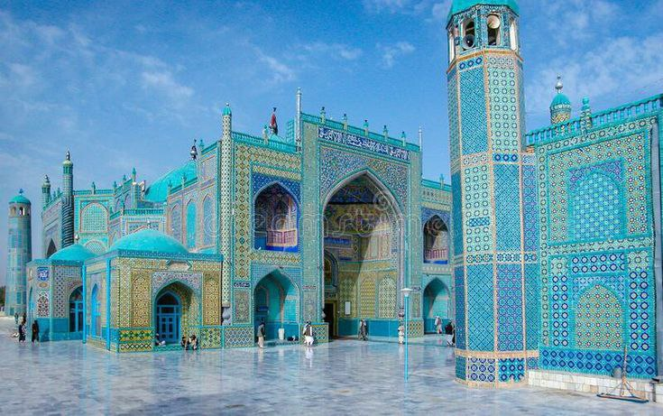
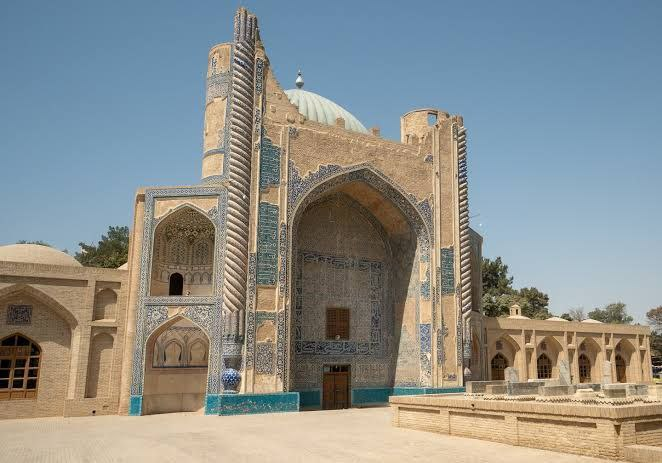

Blue Mosque
The famous Shrine of Hazrat Ali, known for its stunning blue tiles and spiritual atmosphere.

Tomb of Rabia Balkhi
The Tomb of Rabia Balkhi, located in Balkh, Afghanistan, is dedicated to Rabia Balkhi, a 10th-century Persian poetess celebrated for her passionate verses and tragic love story.

Shrine of Khwaja Abu Nasr Parsa
This historic shrine is located near the city and is an important religious site. It is known for its calm environment and beautiful traditional design.

Khwaja Sekandar Shrine
Khwaja Sekandar Shrine is a quiet religious place near Mazar-e-Sharif. People visit it to pray and find peace.